Gedächtnis Spiel Quellen
Hier findet Ihr eine Überischt der Bilder des Gedächtnis Spieles und deren Quellen.
- 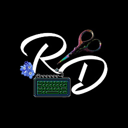 Das Logo von RazielDraganam, wird heir als Deckblatt benutzt, wenn die Karten noch verdeckt sind.
- Verein für historisches Handwerk und lebendige Geschichte e.V.
- 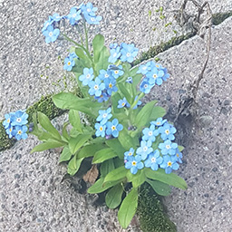 Foto einer Vergissmeinnichtblüte, das ich mal gemacht habe.
- 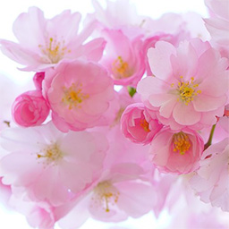 Foto von Kirschblüten, pixabay
- 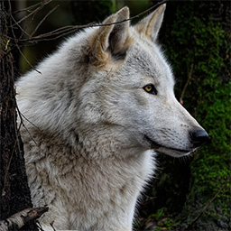 Foto von einem Wolf im Wald, pixabay
- 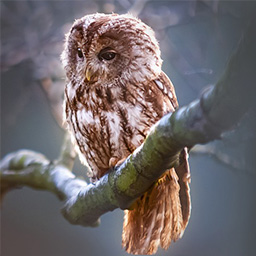 Foto von einer Eule, pixabay
- 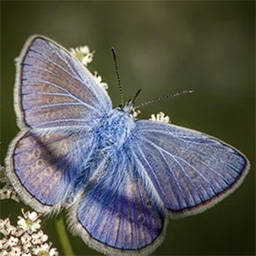 Foto von eines Schmetterlings, pixabay
- 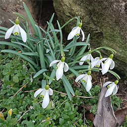 Foto mit Schneeglöcken für das Thema Frühling. Eigene Aufnahme.
- Foto mit dem Thema Sommer, pixabay
- 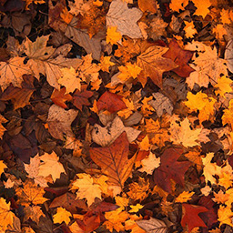 Foto mit dem Thema Herbst, pixabay
- 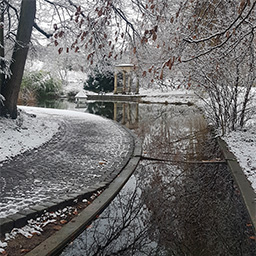 Foto mit dem Thema Winter, von mir selber aufgenommen. Park in Winnenden.
- 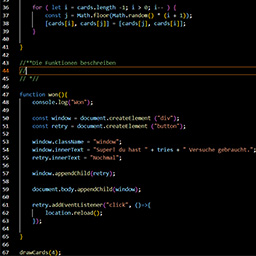 Codeteil aus dem Gedächtnisspiel JavaScript
- 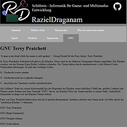 RazielDraganams GNU Seite
- Foto mit dem Thema Feuerwerk, pixabay
- 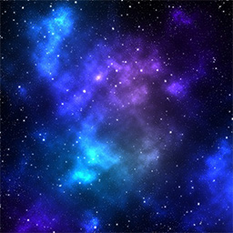 Foto mit dem Thema Universum, pixabay
- 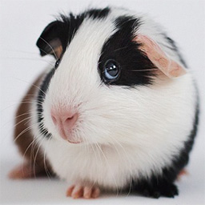 Foto von einem Meerschweinchen, pixabay
- 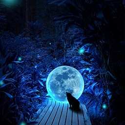 Bild von einer Katze und Vollmond, pixabay
- 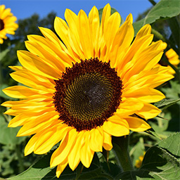 Bild von einer Sonnenblume, pixabay
- 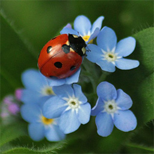 Bild von einem Marienkäfer, pixabay
- 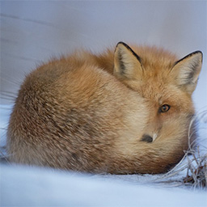 Bild von einem Fuchs im Schnee, pixabay
- 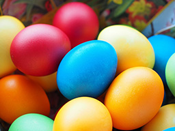 Bild von Ostereiern, pixabay
- 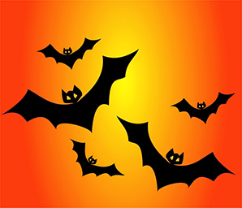 Bild von Fledermäusen vor Orangenem Hintergrund, pixabay
- Bild von einem Weihnachtsbaum aus Sternen, pixabay
- 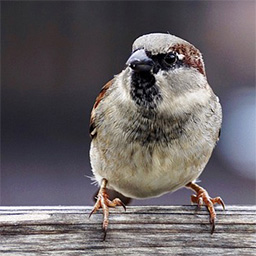 Bild von einem Spatz, pixabay
- 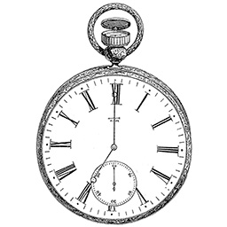 Zeichnung einer Taschenuhr aus dem Buch "Victorian Design from the Crystal Palace" ISBN: 978-0486472195
- 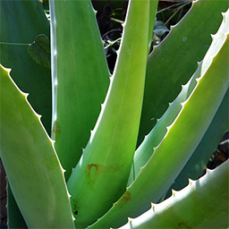 Bild von einer Aloe Vera, pixabay
- 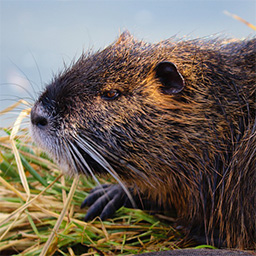 Bild von einem Biber, pixabay
- 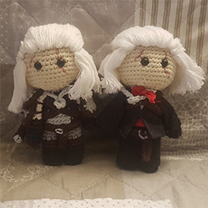 Bild von selbstgemachtem Amigurumi
- 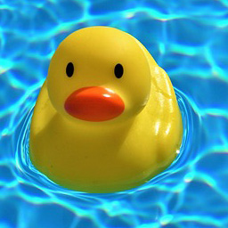 Bild von einer Quietsche Ente, pixabay
- Zeichnung von Puzzle Teilen, pixabay
- 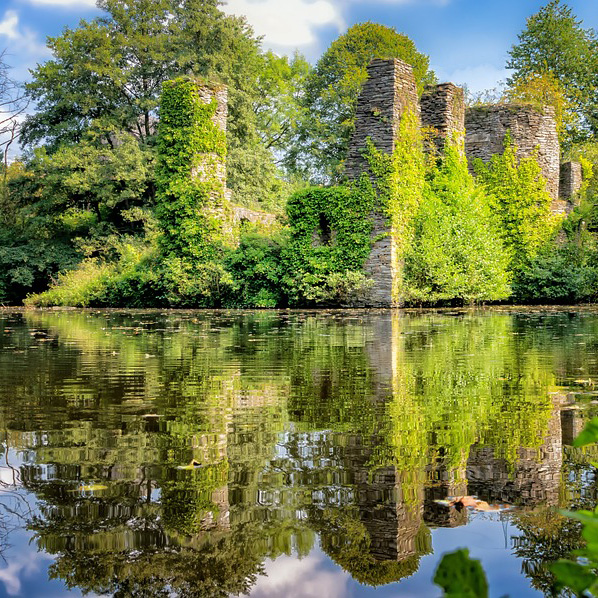 Zeichnung von einer Burg Ruine, pixabay